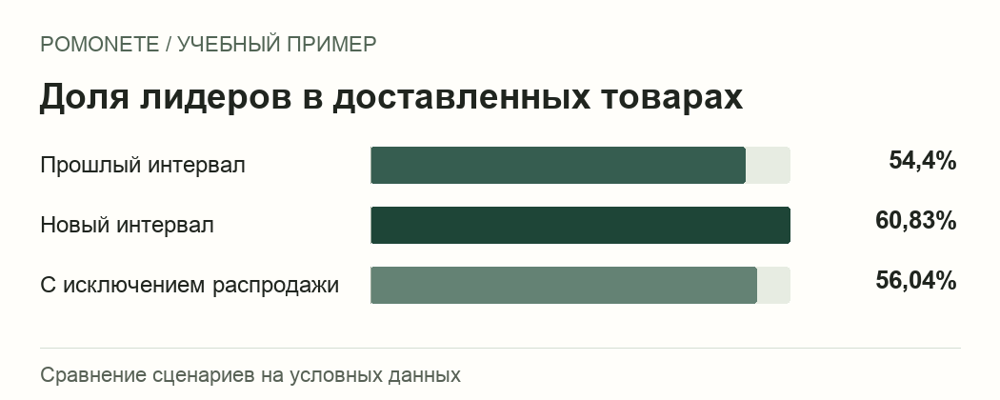

Доля четырёх лидеров в продажах селлера Яндекс Маркета
Как анализ продаж показывает зависимость магазина от нескольких SKU и помогает определить резерв.
В отчёте магазина чехлов на Яндекс Маркете растёт число доставленных товаров. Продавец хочет понять, растёт ли вся линейка или цифры держатся на четырёх позициях. Для ответа нужна концентрация продаж, история наличия и отдельный взгляд на вклад этих SKU в деньги.
Почему рейтинг фиксируют заранее
Выберите группу по предыдущему полному периоду, затем вычислите её долю в нескольких срезах. Если каждый раз переизбирать лидеров по тому же набору, звание лидера и результат дают один и тот же сигнал. Историческую группу полезно отслеживать даже после выпадения отдельных товаров.
Чтобы пересобрать расчёт «Доля лидеров в доставленных товарах» для своего магазина, перенесите в него исходные числа. В формуле A обозначает «доставлено по четырём выбранным sku», B обозначает «доставлено по всему магазину». Деление отвечает за долю, умножение на 100 переводит её в проценты. При нулевом знаменателе долю оставляют пустой. Запишите рядом период и охват каждого среза. Для оценочных строк оставьте пояснения рядом с исходными значениями. При чтении сводки будет видно, какие из них пока подтверждены.
Доля лидеров в доставленных товарах = A ÷ B × 100
| Условие | Доставлено по четырём выбранным SKU | Доставлено по всему магазину | Доля лидеров в доставленных товарах |
|---|---|---|---|
| Прошлый интервал | 680 | 1 250 | 54,4% |
| Новый интервал | 803 | 1 320 | 60,83% |
| С исключением распродажи | 636 | 1 135 | 56,04% |

В сценарии «Прошлый интервал» в формулу подставляем доставлено по четырём выбранным sku = 680, доставлено по всему магазину = 1 250. Получается 54,4%. Четыре лидера зафиксированы заранее, чтобы не изменился состав группы после следующей выгрузки.
В сценарии «Новый интервал» в формулу подставляем доставлено по четырём выбранным sku = 803, доставлено по всему магазину = 1 320. Получается 60,83%. По ходовым чехлам доставлено больше штук. Концентрация выросла вместе с общим объёмом.
В сценарии «С исключением распродажи» в формулу подставляем доставлено по четырём выбранным sku = 636, доставлено по всему магазину = 1 135. Получается 56,04%. Из числителя и знаменателя убрали согласованный период с временным снижением цены.
Если «Прошлый интервал» взять за исходную точку, «Новый интервал» меняет показатель «доля лидеров в доставленных товарах» на 6,43 п. п., а «С исключением распродажи» на 1,64 п. п.. Между двумя последними строками разница составляет -4,8 п. п. при вычитании второй из третьей. Смотрите, какой именно вход изменился между строками. Если менялись объём и условия одновременно, итог сравнения относится ко всему сочетанию.
В пересчёте на исходное значение разница второй строки составляет 11,83%. Здесь в знаменателе модуль первого результата, 54,4%. Для показателя в процентах рядом сохраните и абсолютную разницу в процентных пунктах. Для малого исходного значения процентный скачок может оказаться крупным даже при скромном практическом эффекте. В рабочем отчёте оставьте оба исходных значения, чтобы при расширении выборки можно было пересчитать изменение.
Зачем параллельно смотреть деньги
Самые частые SKU иногда содержат дешёвые расходники, от которых поступает меньше маржинального дохода, чем от крупных единиц. Повторите расчёт доли по вкладу после собственных и площадочных затрат. Для отрицательных вкладов покажите рядом с долями и абсолютные суммы, чтобы облегчить сверку.
Соберите небольшую исходную выборку для «Новый интервал», прежде чем переносить правило на весь магазин. Нужны отчёт аналитики и история доступности предложения. Среди записей найдите одну обычную и одну с изменённым значением «доставлено по четырём выбранным sku». Убедитесь, что после пересчёта на сопоставимое окно обе строки дают те же результаты, которые видит исполнитель. Для ручных поправок оставьте короткое основание.
Рядом с таблицей показов положите календарь доступности, позиций и цен. Выгрузка агрегатов удобна для первого сигнала, но день с выключенным предложением ломает сравнение. Для каждой крупной группы полезно иметь отдельные суммы числителя и знаменателя. Если у дорогой категории мало показов, сводная конверсия почти полностью повторит поведение ходовых позиций. Для разбора причины начните именно с групп, у которых заметно изменился вклад в суммарную аудиторию.
Что сильнее всего меняет результат
Для «доля лидеров в доставленных товарах» начнём с результата 60,83%. В «Новый интервал» условно меняем «доставлено по четырём выбранным sku», «доставлено по всему магазину» по очереди. Шаг округляем до целой исходной единицы около 10%. Сравнение относится к одной строке расчёта. При сильной сезонной смене его полезно повторить и на второй базе с другим доступным объёмом.
- «Доставлено по четырём выбранным SKU» меняется с 803 на 883. При прежних остальных входах получается 66,89%, сдвиг составляет 6,06 п. п..
- «Доставлено по всему магазину» меняется с 1 320 на 1 452. При прежних остальных входах получается 55,3%, сдвиг составляет -5,53 п. п..
Данные по «доставлено по четырём выбранным sku» дали самый заметный эффект величиной 6,06 п. п.. Подготовьте второй тест с двумя входами, которые обычно меняются вместе. Сравните его с одиночной подстановкой. Различие покажет, хватит ли следить за одной строкой при выбранном действии или в отчёте понадобится связанная пара наблюдений.
Можно сравнить долю четырёх лидеров в разных моделях работы. Часть позиций продаётся благодаря сроку доставки, отличающемуся от остального ассортимента. Если объединить складские модели раньше времени, не удастся выяснить, где срок особенно чувствителен.
Как применить к запасу
Отметьте позиции, от которых зависит заметная доля результата, и запишите срок пополнения, возможную замену и диапазон адекватного резерва. Для решения посчитайте, сколько приносит лишняя неделя доступности и сколько будет стоить замороженный на складе запас.
Снимайте второй срез на тех же условиях. Если изменились источники или доли предложений, добавьте таблицу с фиксированным составом товаров и отметьте, какую долю исходной выборки она охватывает. Один расчёт покажет, что произошло у магазина в целом. Расчёт с фиксированным составом покажет изменение у сравнимых позиций. Заказы закрываются со временем, поэтому суммы по завершённым продажам дополните датой проверки.
В карточку наблюдения внесите исходный ориентир, факт после вмешательства и размер выборки. Для «доля лидеров в доставленных товарах» оставьте единицу из таблицы и дату подстановки. В аналитике продавца Яндекс Маркета показатель должен отвечать на тот же вопрос при повторном сборе. Если на следующем цикле изменятся исходники, сохраняйте расхождение вплоть до строки, которую сможет пересчитать коллега.